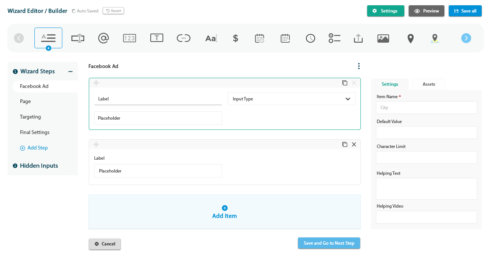
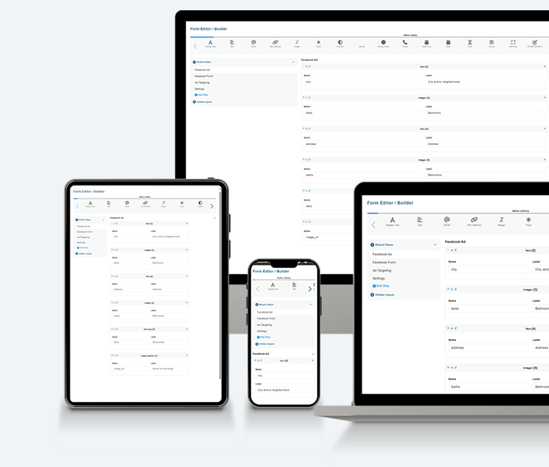

A widget that is used to generate form steps for an Ad creating wizard.
While creating Facebook ads, the system requires users to create form steps for each ad template. This caused redundant development work.
Creating a form builder widget, which provides a simple and powerful way to build form steps. This leads to higher efficiency and saves time and effort.
Worked closely with the development team to identify the requirements and design wireframes to test the ideas.

Auto Saved with a Revert option, plus Settings, Preview and Save all.
A scrollable toolbar of input types to add to the step.
A sidebar listing Step 1 to Step 4, an Add Step action and Hidden Inputs.
Every item has a label, an input type and a placeholder. Add Item, Cancel and Save and Go to Next Step sit below.
Item name, default value, character limit, helping text and helping video.
The widget is shown running across desktop, tablet and mobile screens, with steps such as Facebook Ad, Facebook Form, Ad Targeting and Settings.
